首页 / I 音频
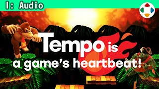
#12:36让节奏配合游戏
Make the Tempo Match the Game音频分类开篇：游戏的声音有音乐、效果音、语音等。节奏（BPM，每分钟拍数）有与游戏内容合不合之分；虽然很依赖个人喜好，但要有意识。每秒一拍约 BPM 60，两拍约 120。《大乱斗》对战改编曲多在 130～170，少数到 200。攻防速度决定合适的节奏，场景变了也不同。《勇者斗恶龙》越往地下城深处音乐越慢——很有效但少见。
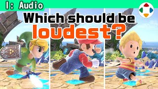
#24:48平衡效果音
Strike a Balance with Sound Effects游戏中几乎一直在响效果音，音量、华丽度、显眼度要好好考虑。走路声和剑空挥声都很小，该优先哪个？原则：与玩家关系越大的声音越大。以《大乱斗》为例的优先顺序：击坠 > 命中/完美防御 > 必杀技/语音 > 爆炸 > 回避/护盾/抓崖 > 空挥/冲刺 > 跳跃/着地 > 步行。着地、步行也按服装与材质做个性；不要只看声源大小。
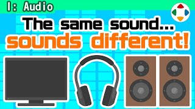
#32:43在多种环境中试听
Listen in Various Environments检查声音时一定在多个环境里对比：耳机、电脑音箱，以及最重要的廉价电视。电视自带小喇叭低音几乎全无，但它最普及。只在隔音好的录音室精调，民用喇叭可能完全听不好。要贴近玩家的环境；换耳机会让基准偏移。Switch 喇叭不太重视。题外话：最难做的音是隆的命中音。
 #43:04
#43:04游戏音乐与环境音
Game Music and Ambient Sounds常听人说：以前的游戏音乐好记好哼，现在的好莱坞化，响着跟没响一样。那就给现代游戏配上红白机音乐——吵吧？画面进化、视觉信息增多，太突出音乐就不合适了；写实画面需要环境音，各元素都要有存在感。不过一部作品的曲子确实太多，难记难嗨；他常做主题曲再改编用于各场景。
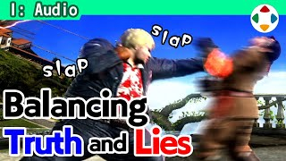
#52:47虚构与写实的声音
Audio as Fiction and Non-Fiction格斗游戏如果用真实声音，不会这么被接受。《街霸 2》升龙拳命中声满是谎言——像昭和黑帮电影的夸张；日本本就有夸张声音的文化。画面越写实，夸张声音越违和，但完全写实打人只会「啪」一声，不够。另一方面，写实声音能给无意义之处赋予意义：《我的世界》粗糙方块靠声音有了木石的重量。
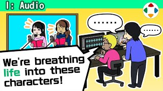
#64:50语音录制
Voice Recording做一个斗士至少一年以上，但《大乱斗》的语音录制每名斗士只要约 1 小时。流程：选角（多半原作已定）→ 写台本（竖排，按常规动作套用，特色台词另录，准备原作参考音源）→ 约录音室 → 录音（樱井亲自用对讲按钮指导）→ 海外语音由 NOA/NOE 主导 → 录后反复编辑。台词短、频率低，并避免声音撞型。
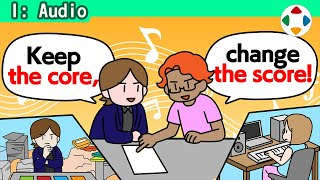
#74:24音乐的改编
Arranging Music《大乱斗》请非常多作曲家改编非常多曲子。流程：樱井先从各作品选候选曲（多于实际数）→ 召集音乐家说明要点（节奏对战向、配合 3-2-1 开场、短原曲可混入他曲、需有抑扬与高潮、循环点、2 分/2 分半内结束）→ 作曲家选曲 → 制作 → 经声音导演转达监修。最看重：主旋律与原曲相同。
 #86:45
#86:45原曲永远是对的
The Original Piece is Always Right改编 SNK《雅典娜》时陷入少见的泥潭：调整方向与监修相反——源于对「主旋律」的误解。玩家听到的主旋律是 A，乐理上却是 B；但原作中听到的就是正确的曲。还有先合拍再变反拍的奇妙段落也照样再现。《超能力战士》（1987，号称首款认真唱 BGM 的游戏）改编：日版做三段，英版一段后转器乐再回人声，对照原作的内置音源切换；连日式英语的发音也再现。
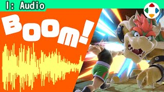
#93:00起音要强，余响要轻
Strong Attack, Light Reverb《大乱斗》命中音的波形：开头一下就响亮，后接余响。声音团队交上来的常是余响长的音。《大乱斗》4～8 人对战，效果音满屏响，容易成为噪音洪流；所以要求两点：起音（Attack）要强——最初就到峰值，反应要立刻返回；余响别拖——否则连打时糊在一起。强攻击有顿帧，最好在画面停住期间主要部分就结束。
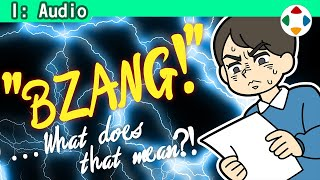
#103:02如何对效果音下指示
Giving Feedback for Sound Effects效果音与想象不同或不够爽时要请人调整，但声音没有实体，监修指示极难。具体表达（如「起音强」）随时用；大家都知道的东西可以比喻（如喷气机声），但不是人人都知道的例子要避免；有时给 YouTube 链接。远程工作中尽量不用拟声词——但声音负责人说偶尔有拟声词更有帮助。不必与他脑中的声音一致，只要合游戏目的就 OK。
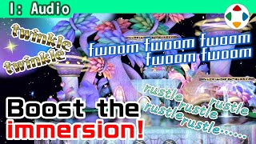
#112:01环境音的平衡
Balancing Ambient Sounds《大乱斗》也有不易听到的环境音，调大音量会发现种类意外地多。在重要度/优先度中环境音最低，太响会盖住关键效果音；但也不能完全听不见：环境不同回响不同，好音箱环境下有好的环境音很重要；停手时一片死寂就没氛围。主观/越肩视角尤其要有身临其境感。环境音可以相当写实，可借鉴影视的技术。
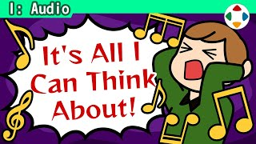
#122:58用其他曲子作参考
Using Other Songs for Audio Reference觉得某首现有曲子特别适合游戏时，会委托「做一首像那样的」。作为参考资料很有用，给作曲家具体线索；但也危险：导演被那首曲支配，听什么都像赝品；作曲家被支配，做「相似但不同」很痛苦，不清楚该改哪里会迷失目标。《神之手》第一关「像 Ventures」的委托；也有直接谈下版权的例子：《俺之尸》的「花」。
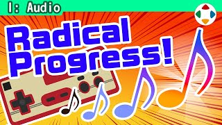
#136:14红白机与 NES 的音源
Famicom and NES Audio杂谈：一台硬件进化如此之大，空前绝后。红白机音源：方波 ×2（可变占空比）、三角波 ×1（贝斯）、噪声 ×1（打击、爆炸）、DPCM ×1（采样，如《马力欧 3》定音鼓，后期作品才多用）。磁碟机加了波形存储音源；不少卡带内置扩展音源芯片——但 NES 删去了相关针脚，所以日美版音乐风味不同。推荐 Sunsoft 小高直树的曲子。
 #142:26
#142:26没有哪部名作的声音是差的
No Masterpiece Has Bad Audio「个人意见」——其实这个频道全是他的意见。玩过大量游戏后他确信：没有声音差的名作。很久以前有的游戏完全没声音，除此之外，即使只有简单噪声效果音的作品，声音也构建得很好。画面差的名作、游戏本质不连贯的名作都有，声音差的名作却一个也想不到。回想名作，先浮现的往往是音乐与效果音。